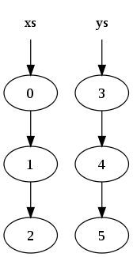
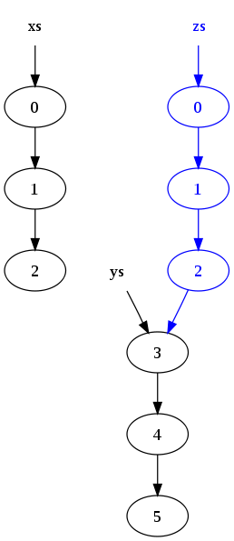

Functional Data Structures
Functional Programming in Java
Created by Mark Perry, @mprry, G+, Blog, LinkedIn, GitHub, maperry78@yahoo.com.au
 |
 |
 |
Introduction
- FP emphasises not updating data
- Alternative?
- Pure functions
Referential Transparency
// updating is not referentially transparent
List<Integer> list = new LinkedList<>();
list.add(1);
List<Integer> list2 = list; // [1]
new LinkedList<>().add(1);
List<Integer> list2 = new LinkedList<>(); // []
Functional Data Structures
- Values are immutable!
- Use pure functions
- Data copying issue?
Immutable Structures
- Copy?
- Reuse list due to immutability
- Data sharing
List Sharing
List<A> xs = list(0, 1, 2);
List<A> ys = list(3, 4, 5);
List<A> zs = xs.append(ys) // [0, 1, 2, 3, 4, 5]
|  |  |
Linked List
abstract class List<A> {
abstract A head();
abstract List<A> tail();
static List<A> nil() {...}
static List<A> cons(A h, List<A> t) {...}
static List<A> list(A...as) {...}
}
class Nil<A> extends List<A> {...}
class Cons<A> extends List<A> {...}
List<A> a = nil();
List<A> b = cons(1, nil());
List<A> c = cons(1, cons(2, nil()));
List<A> d = cons(1, cons(2, cons(3, nil())));
List<A> e = list(1, 2, 3);
Tree Insertion
Tree<A> xs = ??? // a tree
Tree<A> ys = xs.insert("e")
Tree Insertion (2)
Tree<A> xs = ??? // a tree
Tree<A> ys = xs.insert("e")

Data Sharing
- Efficiency from data sharing
- Often needs tree structures
- Scala Vector, O(1)
- random access
- update
- prepend, append
- head, tail
- Vector Trie
Exercises
- Assume tail
- Generalise tail
List<A> tail(List<A> list)
List<A> drop(List<A> list, int n)
List<A> dropWhile(List<A> list, F<A, Boolean> f)
Naive Implementation
List<Integer> sum(List<Integer> list) {
if (list.isEmpty()) {
return 0;
} else {
return list.head() + sum(list.tail());
}
}
List<Integer> product(List<Integer> list) {
if (list.isEmpty()) {
return 1;
} else {
return list.head() * product(list.tail());
}
}
Fold
<A, B> B fold(List<A> list, B acc, F2<B, A, B> f)
List<Integer> sum2(List<Integer> list) {
return fold(list, 0, (acc, i) -> acc + i);
}
List<Integer> product2(List<Integer> list) {
return fold(list, 1, (acc, i) -> acc * i);
}
Fold Left
<B> B foldLeft(List<A> list, B acc, F2<B, A, B> f) {
if (list.isEmpty()) {
return acc;
} else {
return foldLeft(list.tail(), f.f(acc, list.head()), f);
}
}
foldLeft(list(1, 4, 9), 0, sum)
foldLeft(list(4, 9), 1 + 0, sum)
foldLeft(list(9), 4 + 1, sum)
foldLeft(nil(), 9 + 5, sum)
14
Fold Right
<B> B foldRight(List<A> list, B acc, F2<B, A, B> f) {
if (list.isEmpty()) {
return acc;
} else {
return f.f(foldRight(list.tail(), acc, f), list.head());
}
}
foldRight(list(1, 4, 9), 0, sum)
foldRight(list(4, 9), 0, sum) + 1
(foldRight(list(9), 0, sum) + 4) + 1
((foldRight(nil(), 0, sum) + 9) + 4) + 1
(((0) + 9) + 4) + 1
Exercises
List<A> reverse(List<A> list)
List<B> map(List<A> list, F<A, B> f)
List<A> flatten(List<List<A>> list) // aka join
List<B> flatMap(List<A> list, F<A, List<B>> f) // aka bind, >>=
Trees
abstract class Tree<A>
class Empty<A> extends Tree<A>
class Node<A> extends Tree<A>
Growing Trees
Tree<Integer> t1 = Tree.<Integer>empty();
Tree<Integer> t2 = Tree.leaf(1);
Tree<Integer> t3 = Tree.tree(leaf(3), 5, leaf(7));
Exercises
B foldLeft(Tree<A> tree, B acc, F2<B, A, B> f)
int size(Tree<A> tree)
int depth(Tree<A> tree)
Tree<B> map(Tree<A> t, F<A, B> f)
List<A> traverseLeft(Tree<A> t)
Summary
- Data Sharing
- Folds
- Practiced Pure Functions
Afterword
Functional Programming in Scala, Chiusano and Bjarnason, Chapter 3, Functional Data Structures
|
|
|
Created by Mark Perry, @mprry, G+, Blog, LinkedIn, GitHub, maperry78@yahoo.com.au